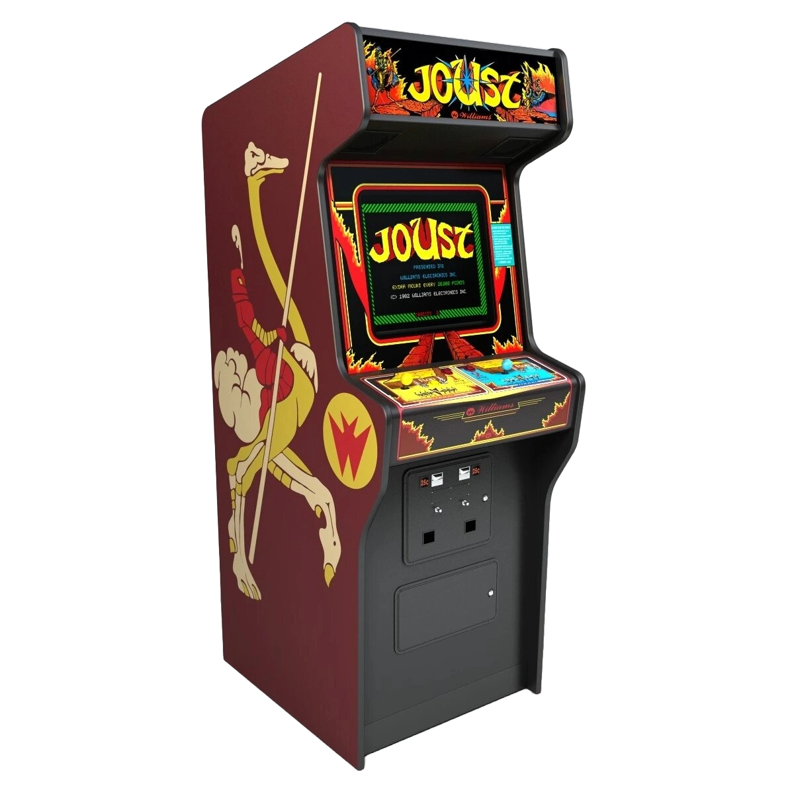

Wat zijn Arcade machines?
Arcade-machines zijn elektronische speelautomaten die zijn ontworpen voor het spelen van videospellen. Arcade-machines zijn populair sinds de opkomst van videospellen in de jaren 70 en 80. Ze bieden een interactieve en meeslepende game-ervaring voor spelers. Inmiddels worden ze niet veel meer gebruikt door de overname van computers, alleen blijft het wel een stuk uit de geschiedenis van videogames.